Create a folder called learn_git and go into the learn_git folder
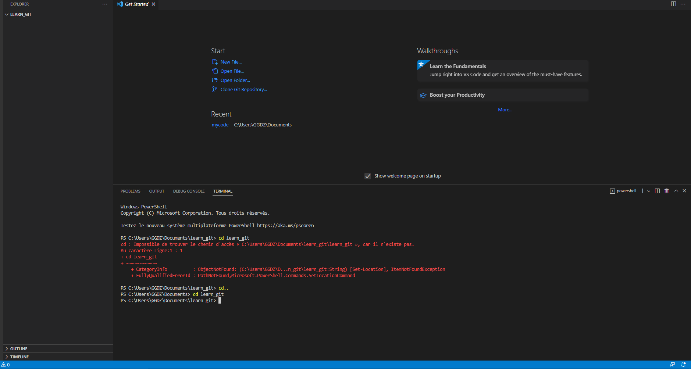Create a file called third.txt
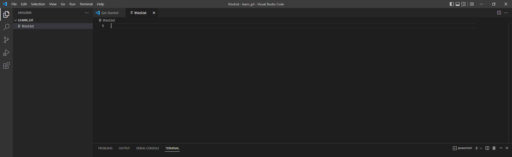Initialize an empty git repository
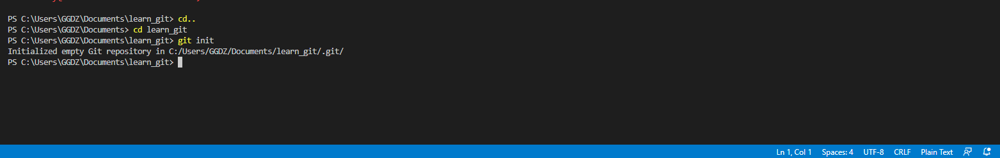Add third.txt to the staging area
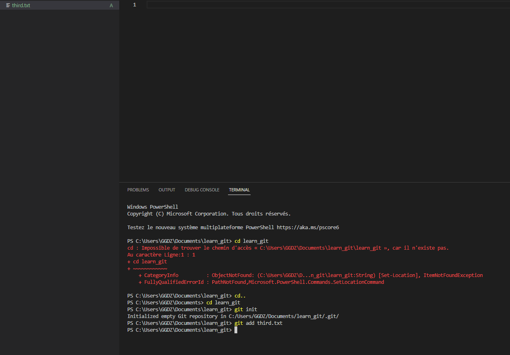Commit with the message "adding third.txt"
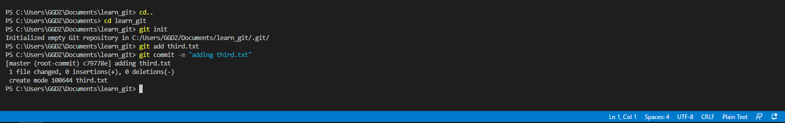Check out your commit with git log
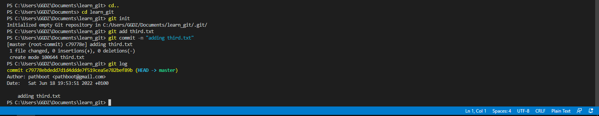Create another file called fourth.txt
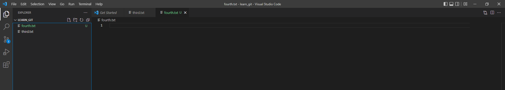Add fourth.txt to the staging area
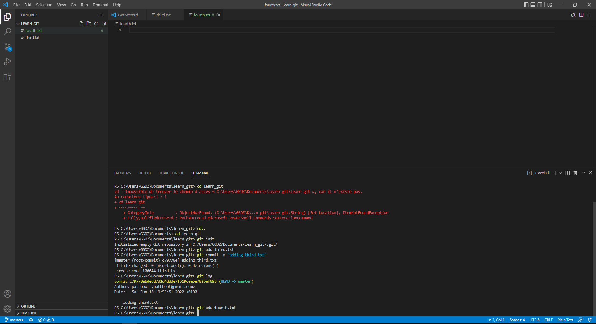Commit with the message "adding fourth.txt"
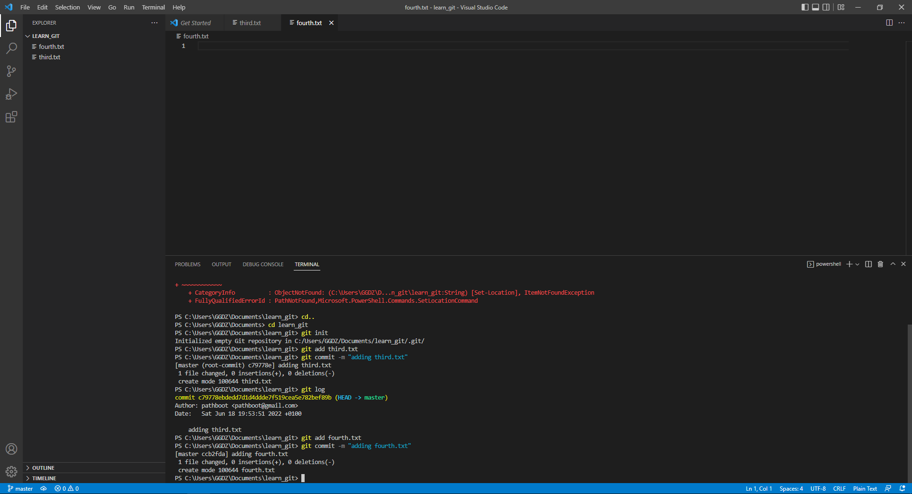Remove the third.txt file
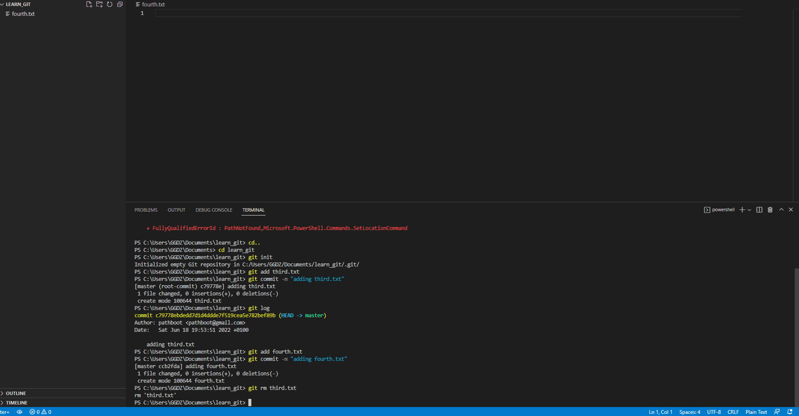Add this change to the staging area. (Using the command "git add ."
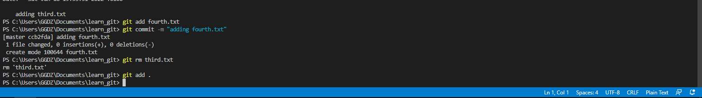Commit with the message "removing third.txt""
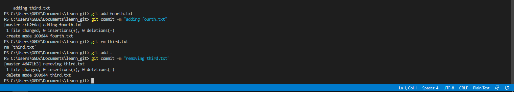Check out your commits using git log
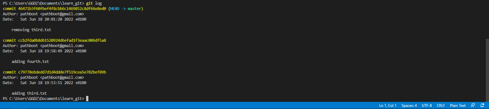Change your global settings to core.pager=cat
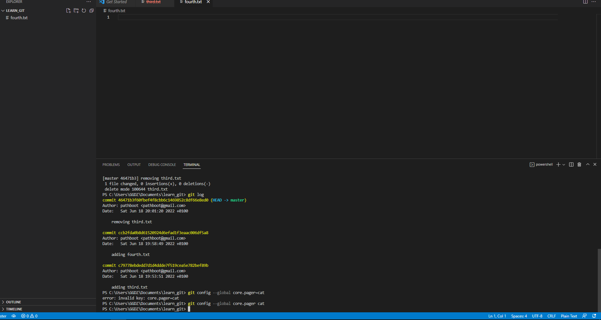Write the appropriate command to list all the global configurations for git on your machine
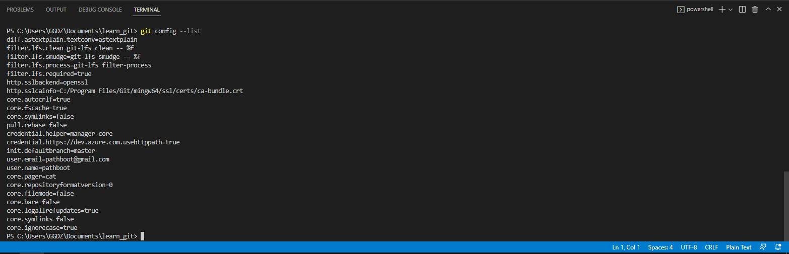